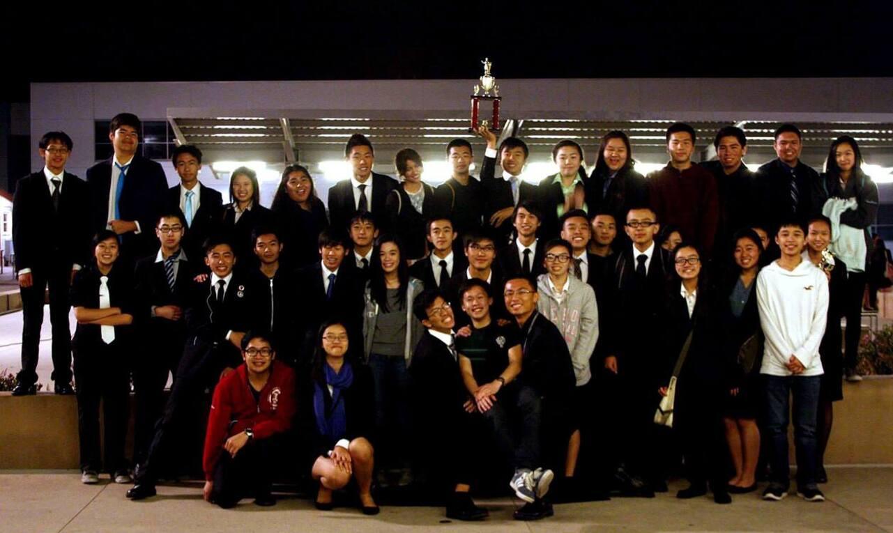
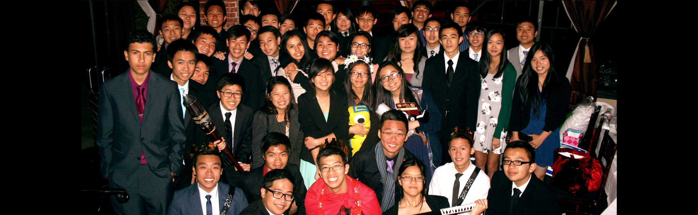
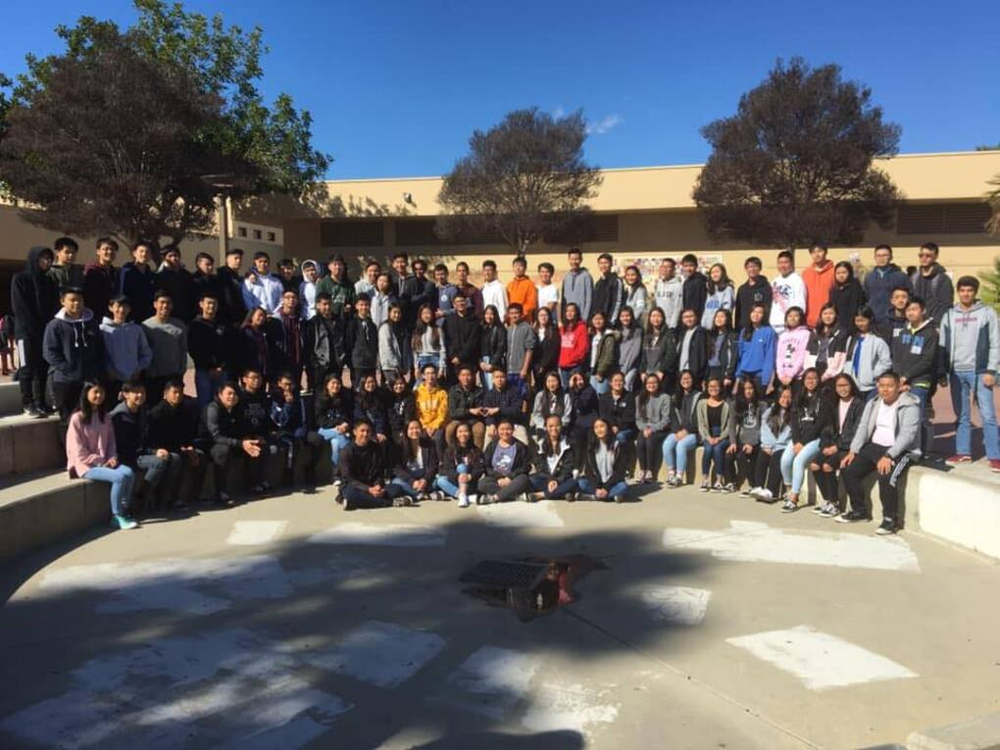
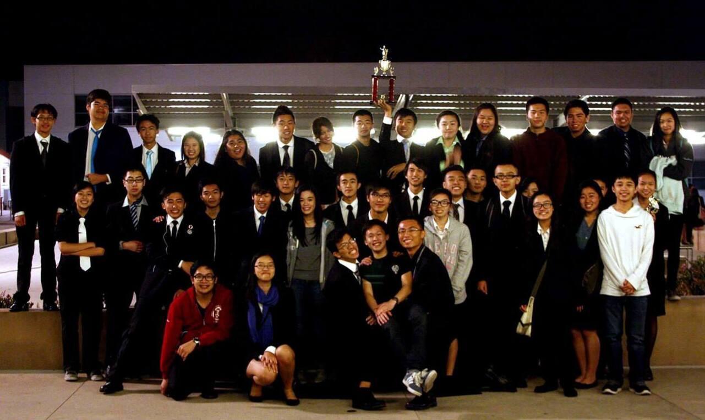
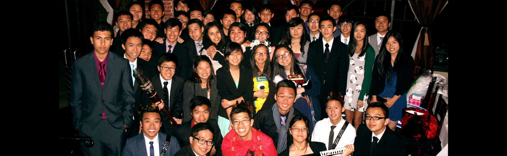
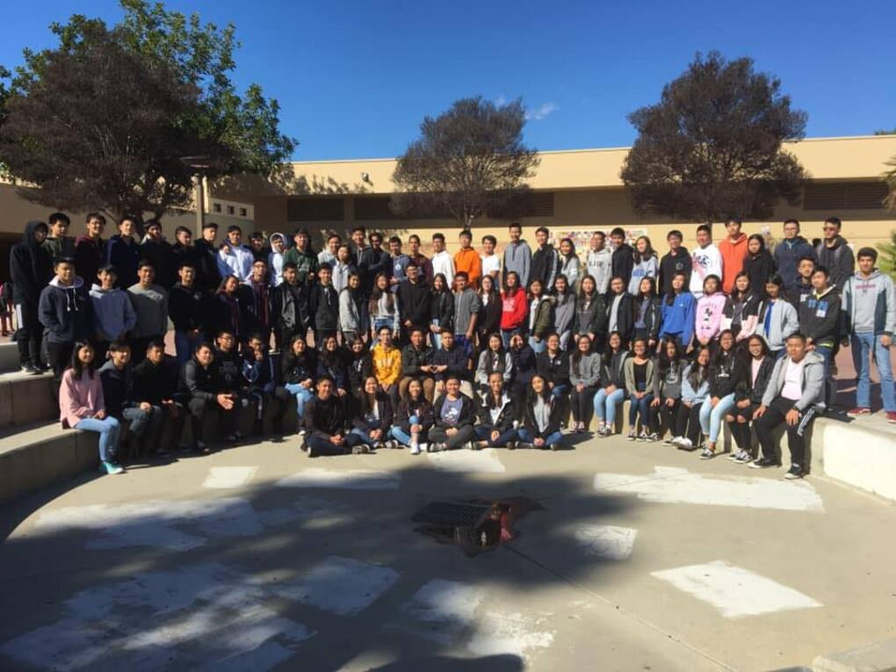

Justin Quach
Hello! I'm Justin Quach and I currently attend the University of Southern California Riverside as a second year, hoping to enroll in the School of Business by next year. My hobbies are playing games, binging anime, and playing sports. A quality that I would say is a strong point that I have is the time I invest into many of the activities I have interest in.
Currently I have experience working at the Alhambra City Hall under the finance department where many audits were executed on government related firms that required funds. Many of the duties involved filing and reorganizing key data. I speak spanish very well due my experiences with AP Spanish during my high school career. I have plenty of different experiences in several fields as well so I feel that I can get along well with others just by sharing common interests. In my life, I have had experiences in music, sports, languages, and recreational activities as well.
I hope to work in an environment filled with professionalism and hard workers so that I can gain valuable experience to grow as an employee. A key goal of mine is to return to people around me by creating an impact in any work environment I'm assimilated in. Personally, I genuinely invest myself into enjoyable environments where I eventually fluorish as a result of the time commitment and effort I put in all activites.
Experience
Clerical Worker
• Filed documents of audits in the finance department in specified date orders for others to access easily
• Worked with computer software to update auditing process for future usage
• Updated infrastructure of company for ease of use in the future
Red Cross Club Secretary
• Took meeting minutes to keep track of plans of the club’s upcoming events or fundraisers
• Tracked 310 members’ hours to measure dedication of each individual member to evaluate whether they could remain a member
• Collaborated with 6 other peer officers to brainstorm new ideas to implement to improve event organization and performance
• Communicated with advisors to keep 3 blood drives well organized
Marching Band General Member
• Participated in marching band competitions against other schools
• Played Trombone for two years
• Helped new upcoming members with tempo and note reading
• Kept section on task during new song releases
Education
UC Riverside
UC Riverside
Portfolio






